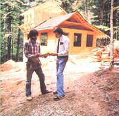

If you'd like an expert to work on your home, know how to...
STAFF PHOTO
Even the most ardent do-it-yourselfer is occasionally confronted with a task that exceeds his or her ability and/or time . . . and among the most common "too big to handle" jobs is the construction, major repair, or remodeling of a building. However, even if the work involved is left to professionals, an individual still needs skill, experience, and time to pull together the diverse efforts of a selection of specialists to guarantee that the results are sound, attractive, and economical.
The following suggestions and guidelines-which are based on my own experience as a craftsman and contractor-are intended to help you pick the right person to manage the building or renovation of a home. What's more, I hope my comments will assist you in developing a good working relationship with your contractor.
PICKING A PEACH
Obviously enough, selecting the right man or woman to oversee the construction (for example) of a home is the most important step in avoiding postconstruction headaches. But actually finding a person with the skill, integrity, and personality to work well with you may be easier said than done. However, you can start your search by contacting the local building inspector, who may be able to provide a list of reputable contractors. (Frank Mesaric-the inspector for my hometown, Montrose, Colorado-offered the following information when I questioned him over the phone: "I can't recommend one contractor over another, but I can provide a list of five whose work has proved acceptable to the community.") Another way to check on builders is to call local materials suppliers, who-at the very least-will tell you whether or not a particular individual pays his or her bills promptly.
From these general sources, develop a list of at least three contractors . . . and then look into the background of each one more closely. Ask them for credit and work references . . . then follow up on the leads to see whether they're valid. It's especially important to speak with some former customers, to find out how satisfied they've been with your prospective employee's work (and remember, the person you hire will be functioning as your employee). From those conversations, you're likely to learn a great deal about whether the particular contractor, however skilled, has either ideas about housing that are similar to yours or the flexibility to meet your needs. (You'll want a really exceptional contractor if you aim to build an unconventional structure . . . such as an earth shelter or a post-and-beam house.)
THE PAPERS
There are several basic legal qualifications that may or may not be required of contractors in your area, and there are still more that-although they're optional-you may want to demand. A license, for example, isn't mandatory everywhere . . . but if a contractor has one, there's a good chance that he or she is reputable. Of course, there are also valid reasons for an individual to forgo a license where it's not required-including the added expense and the imposition of controls from the building department-but you should be particularly careful in your scrutiny of a contractor who doesn't have one.
You'll also want to know whether your prospective choice carries a performance bond. This is a guarantee that the work, as described in the contract, will be finished . . . and that if it isn't, you can get someone else to complete it at no extra cost to you. When hired without a performance bond, a contractor may stop or delay work because of, for example, an incorrect estimate . . . in which case, your only recourse is either to sue or to foot the completion bill. Obviously, bonding can save you a lot of expense and trouble. Furthermore, the willingness to carry a bond is a pretty good indicator of a contractor's intention to carry out the job, since he or she is unlikely to make a habit of paying the penalties for unfinished work.
And, bonded or not, your contractor should have personal liability and property damage insurance. Suppose, for instance, a dump truck is being backed to a window to be loaded with trash, and the driver loses control. If the vehicle comes to a stop a foot or so inside your house, your contractor'd better be insured!
Be certain that your prospective builder has workman's compensation coverage for his or her laborers, too. That way, if someone is injured on your job, the contractor's coverage may keep you in the clear. (Still, it's best to speak to your own insurance agent to make sure that you have coverage in such an event, as well.)
THE CONSTRUCTION CONTRACT
A carefully thought-out written contract should be the core of every job you enter into with a contractor. The scope of the agreement will vary with the extent of the proposed work, but the following is a list of considerations that ought to be covered.
[1] Dates for starting and completing the work should be stated, and-if possible-a penalty clause for running over the time limit should be included. (Circumstances beyond the contractor's control, such as unusually adverse weather, are generally excepted from the penalty clause.)
[2] If foundation work is involved, specify that you want a soil analysis performed by a civil engineer. Certain types of earth require special foundations, and your contractor isn't likely to be an expert in that field.
[3] The contract should include a list of all the materials to be used, as well as a description of their quality: Construction-grade-rather than utility-grade-lumber, for example, should be specified.
[4] The contractor should provide a list of all the materials suppliers and subcontractors who will be involved in the job.
[5] The payments should be made at the completion of various stated phases of the work, with no more than a 33% down payment at the beginning. These initial funds will allow the contractor to secure materials, and subsequent remuneration will cover expenses as they're incurred. (For example, you should pay for the pouring and finishing of the slab when that work is completed.)
[6] Specify that all checks will be made payable to both the contractor and the supplier or subcontractor. This protects you from unscrupulous builders who take your money but fail to settle their accounts with their suppliers and subs . . . leaving you responsible for the bills. If-and only if-the contractor supplies you with a lien release from the particular supplier or subcontractor, you can make a check payable to the contractor alone. Otherwise, not only might you be left liable for unpaid bills, but an unpaid supplier or subcontractor could actually put a mechanic's lien on your home.
[7] The contract should state that the final payment after "substantial completion" (occupancy) will not be made until a lien release has been received from each of the suppliers and subcontractors involved in the work. (In addition, once the job is finished, you should notify each of these individuals in writing that no more labor or materials are to be charged to you.)
If you're careful in choosing a contractor, and if you protect yourself with a proper contract, you shouldn't have any serious problems when you build or remodel. In fact, if you do your homework first and then work cooperatively with an expert, you're likely to find that your new (or renewed) residence will exceed your expectations . . . and do so at a price you can afford.
|
 |
|
|